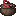
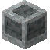

烤爐配件
烤爐配件
烤爐有多種設備可以與其交互，從而擴展其功能。這是因為烤爐在現實中本就是模塊化的。


烤爐漏斗會向其朝向的任何烤爐底輸入原木。它最多可容納16根原木（4組，每組4根，類似一個原木堆），通過從頂部丟入物品來填充其物品欄，也可以通過其他模組的自動化設備輸入。



爐灰收集器放置在烤爐底下方時，會收集草木灰。當燃料消耗時，有50%的幾率獲得草木灰。通過右鍵可以取出草木灰，通過攻擊（左鍵點擊）可以放入草木灰。

不鏽鋼鍋能夠批量製作某些特定的煮沸配方。它有一個物品槽位和10,000mB的流體存儲空間，類似於一個大木桶。
例如，不鏽鋼鍋可以用1份橄欖醬與200mB水的比例製作橄欖油/水。要使用不鏽鋼鍋，手持流體與物品對其右鍵，將其添加到鍋中。空手並按住Shift點擊，可以密封或解封不鏽鋼鍋。不鏽鋼鍋在被密封之前不會沸騰。
不鏽鋼鍋應放置在烤爐底上方。如果配方完成時鍋中的流體會溢出，則會停止沸騰，因此請確保不要裝得太滿——尤其是那些產出流體多於消耗的配方！不鏽鋼鍋可以用紅石控制打開或關閉。
多方塊結構

裝罐臺用於將不鏽鋼鍋中的流體裝入罐子中。裝罐臺側面的注嘴必須對準裝罐臺方向放置。
使用不鏽鋼鍋，可以通過向水中添加甜味劑來製作糖水。當鍋內反應完成時，流體的顏色會改變。手持帶蓋空罐點擊它，即可將其裝滿。
使用右鍵將帶蓋的空罐添加到裝罐臺。當檢測到果醬時，它會自動將空罐子填充為果醬並密封，每罐需要消耗500mB果醬。
群巒傳說的陶鍋和烤架可以放置在烤爐底上方。這些設備會自動從下方的烤爐獲取熱量。除了接收熱量的方式不同外，它們的工作方式與普通的陶鍋和烤架完全一樣。